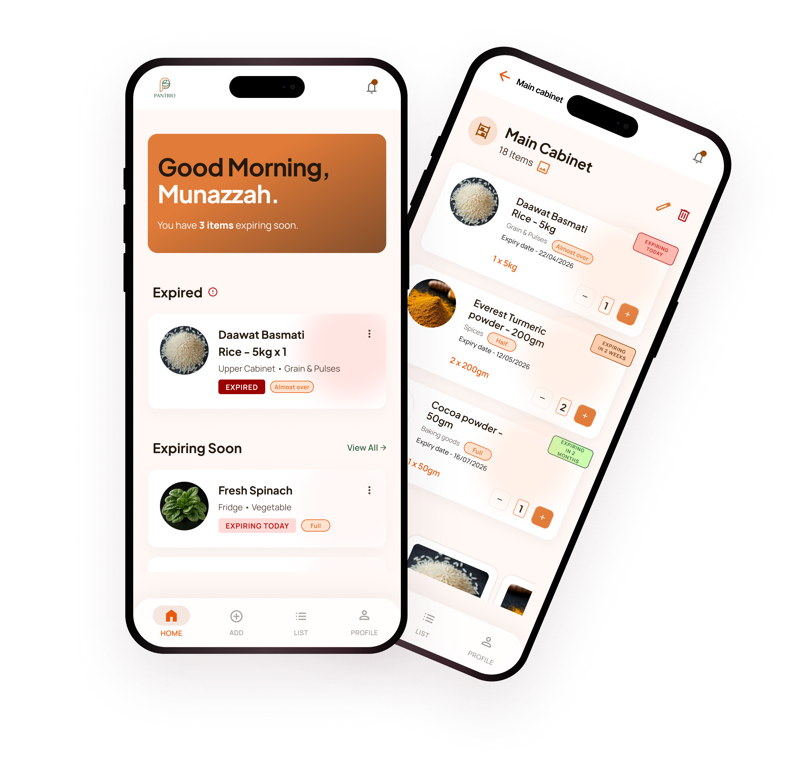
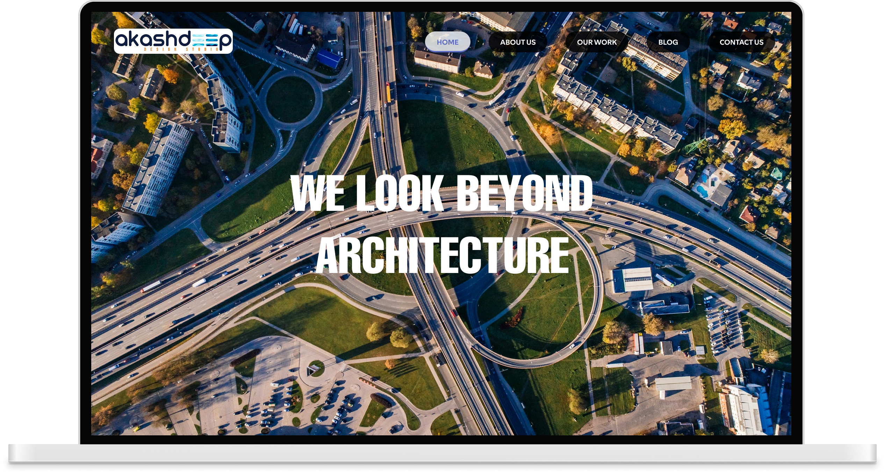

CASE STUDIES
These case studies document my work across real client engagements, where I design and refine digital experiences by balancing user needs, business intent, and technical feasibility.
AI assisted
Pantrio : self-initiative


House of Shaarag : client project
Ecopath : client project


Akashdeep : client project
Deep-diving into user behavior to uncover the “why” behind every interaction and decision.
Building scalable design systems that maintain consistency across complex digital ecosystems.
Crafting high-fidelity interfaces that balance aesthetic beauty with pixel-perfect technical execution.
“Design is not just what it looks or feels like — it’s how it works, driven by human empathy.”